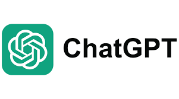

人工智能的先驱者 最好的人工智能
ChatGPT，全称聊天生成预训练转换器[2]（英语：Chat Generative Pre-trained Transformer[3]），是OpenAI开发的人工智能聊天机器人程序，于2022年12月推出。该程序使用基于GPT-3.5、GPT-4、G
PT-4o、GPT-4.5架构的大型语言模型并以强化学习训练。ChatGPT目前仍以文字方式交互，而除了可以用人类自然对话方式来交互，还可以用于甚为复杂的语言工作，包括自动生成文本、自动问答、自动摘要等
多种任务。如：在自动文本生成方面，ChatGPT可以根据输入的文本自动生成类似的文本（剧本、歌曲、企划等），在自动问答方面，ChatGPT可以根据输入的问题自动生成答案。还有编写和调试计算机程序的能
力。[4]在推广期间，所有人可以免费注册，并在登录后免费使用ChatGPT与AI机器人对话[5]。
ChatGPT可写出相似真人的文章，并在许多知识领域给出详细和清晰的回答而迅速获得关注，证明了从前认为AI不会取代的知识型工作它也足以胜任，对金融与白领人力市场的冲击相当大，并在逐步提升取代医疗
人力的能力，以提供比人类更佳的诊断[6]，但也认为事实准确度参差不齐[a]是其重大缺陷，并认为基于意识形态的模型训练结果须小心校正[9][10]。ChatGPT于2022年12月发布后，OpenAI估值已涨至290亿
美元[11]。上线5天后已有100万用户，上线两个月后已有上亿用户[12]。目前GPT-3.5（现升级为GPT-4o mini）为免费使用，无需注册，GPT-4o对已注册免费用户开放使用，但有使用量限制。注册的ChatGPT
免费用户都可以使用浏览、视觉、数据分析、文件上传和GPTs等原付费用户的功能，但有使用量限制。[13]
虽然ChatGPT在生成类人文本方面表现出了卓越的能力，但它们很容易继承和放大训练数据中存在的偏差。这可能表现为对不同人口统计数据的歪曲表述或不公平待遇，例如基于种族[14]、性别[15]、语言[16]
和文化群体[16]的不同观点与态度。
